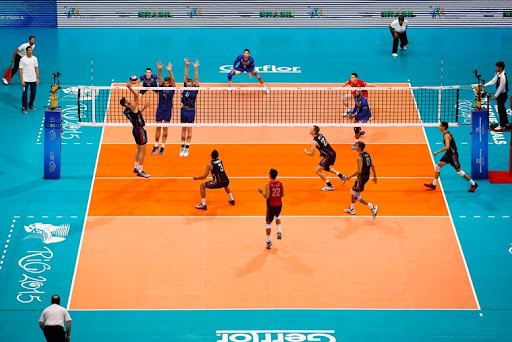

Volleyball
Classroom Tournament Leaderboard
| Position |
Name |
Win |
Lost |
| 1 |
UP |
1 |
0 |
| 2 |
UP |
1 |
0 |
| 3 |
UP |
1 |
0 |
| 4 |
UP |
1 |
0 |
Rules of Volleyball
- Volleyball is played between two teams, each consisting of six players.
- The objective of volleyball is for a team to score points by successfully grounding the ball on the opposing team's side of the court.
- Each team has three consecutive contacts, usually a bump, set, and spike, to hit the ball over the net.
- The rally continues until the ball touches the ground, goes out of bounds, or a team commits a fault.
Official rules can be found on the USA Volleyball website here.
Game Setup:
The volleyball game setup involves two teams of six players each on a rectangular court, aiming to win sets by scoring points through rallies, rotations, and serving, with matches typically played as best-of-five sets.

Image taken from here.